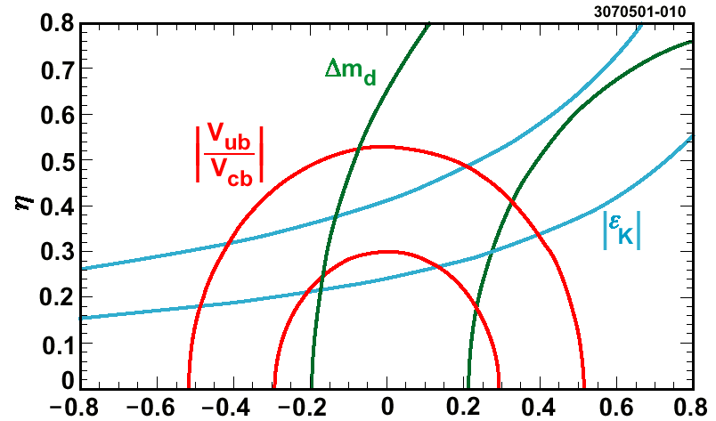
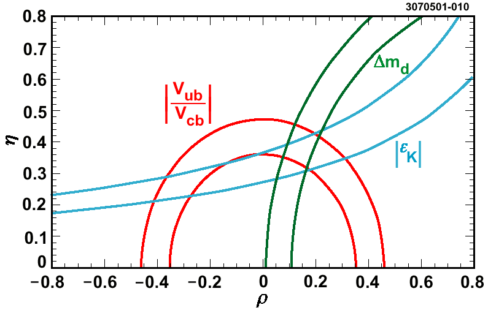

Dilepton Widths of Y(1s), Y(2s) and Y(3s)
Jim Pivarski
A large contribution to CKM matrix element uncertainties in in the QCD factors.
September 2001
2% Precision in QCD Factors


Recent improvements to lattice QCD promise to deliver 2%-level calculations in the next few years.
But if such high precision results are claimed, on what basis are they to be believed?